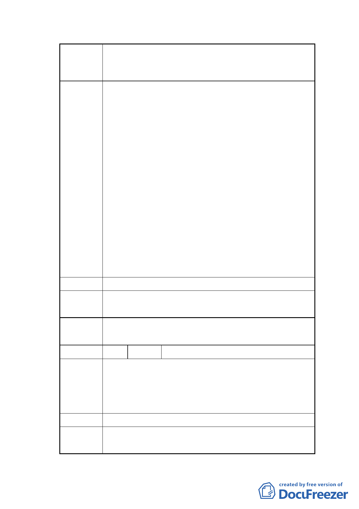

案名
變更臺北市士林區三玉段四小段 491 地號等 4 筆第三種
住宅區為綠地用地暨 491-2 地號等 4 筆道路用地為第三種
住宅區細部計畫案
除本職之教學研究工作外，亦常參與各級政府交通
相關實務計畫之審查與諮詢服務，因敢就本案之交
通影響層面補陳個人意見如下：
1.原計畫之 6 公尺穿越道路倘若闢建，除將會於士東
路 2 巷交會處產生不必要的交通衝突、影響人車安
全外，由於該一交會點距離鄰近的中山北路、士東
路與士東路 2 巷交會的號誌化路口不到 50 公尺，
也會增加該一路口運作的複雜性與事故風險，降低
其效率。
2.以同等面積之綠地替代原計畫之 6 公尺穿越道
路，除具有變更計畫案所述之便利行人安全通行、
增加綠地休憩空間、改善景觀等多項優點之外，並
不會影響週邊地區民眾進出交通之便利性。對於計
畫區內之居民而言，由於消除穿越性車流的干擾，
得以維護良好的居住環境品質，誠為現代化「交通
寧靜區」（Traffio Calming）規劃理念之實現。
三、綜上所述，個人認同本項細部計畫變更案對公眾與
居民相關權益的增進確實頗多助益，敬請卓參。
建議辦法
市府回應 本計畫已檢討，無修正意見。
說明
委員會 錄案提供市府參考。
決議
編 號 3 陳情人 陳琇儀（資料現場發送）
陳情理由
對本案表示支持，社區需要一個公園讓長輩跟小朋友能
安全的使用，不用再跨過車輛很多的中山北路六段。另
外士東路巷道狹小，如果再多一條路出來，會影響巷道
內的交通。
建議辦法
市府回應 （無）
說明
- 13 -